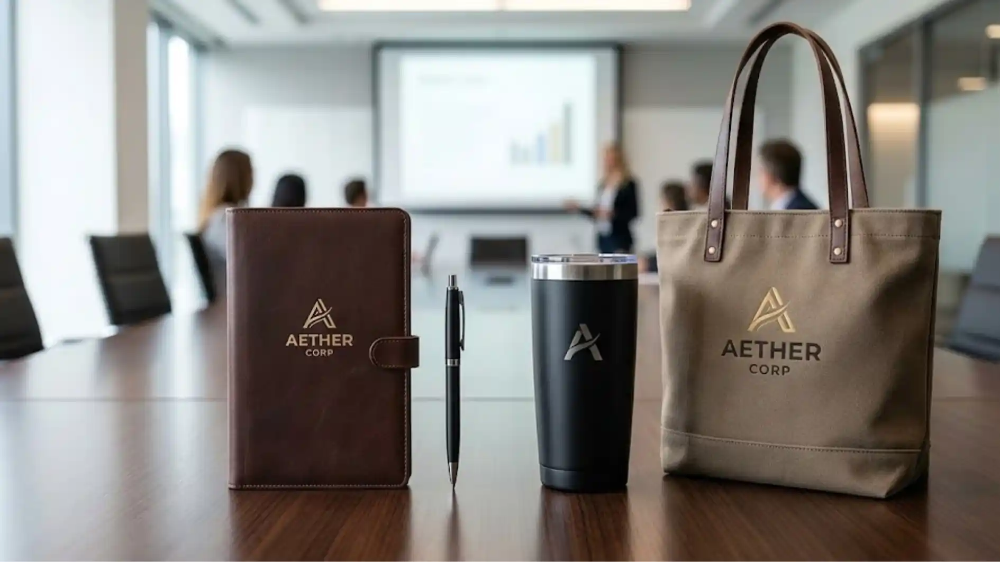
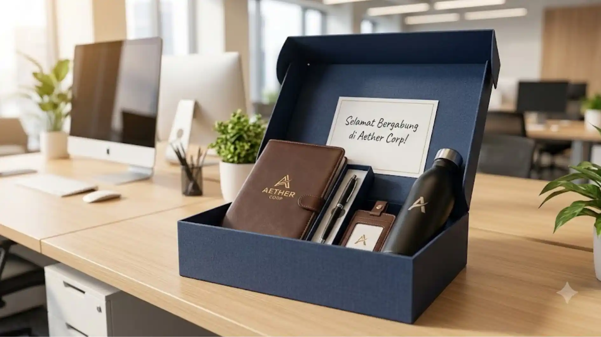

Souvenir Kantor Premium untuk Seminar, Gathering, hingga Employee Welcome Kit
 Indriana Safitri (iin)
3 Agustus 2026
5 Menit Baca
Indriana Safitri (iin)
3 Agustus 2026
5 Menit Baca

Souvenir kantor premium untuk seminar, gathering, dan employee welcome kit perlu disesuaikan dengan tujuan masing-masing acara, mulai dari kesan formal untuk seminar hingga kesan hangat dan personal untuk welcome kit karyawan baru. Setiap jenis acara kantor memiliki karakter dan tujuan berbeda yang memengaruhi pemilihan souvenir. Konsistensi kualitas antar jenis acara tetap penting untuk menjaga citra profesional perusahaan.
Souvenir kantor premium untuk seminar, gathering, dan employee welcome kit perlu disesuaikan dengan tujuan masing-masing acara, mulai dari kesan formal untuk seminar hingga kesan hangat dan personal untuk welcome kit karyawan baru. Setiap jenis acara kantor memiliki karakter dan tujuan berbeda yang memengaruhi pemilihan souvenir. Souvenir seminar umumnya menekankan fungsi praktis bagi peserta selama dan setelah acara berlangsung. Souvenir gathering lebih fleksibel dan dapat disesuaikan dengan tema acara internal. Employee welcome kit berfungsi membangun kesan pertama yang positif bagi karyawan baru. Konsistensi kualitas antar jenis acara tetap penting untuk menjaga citra profesional perusahaan.
"Menurut studi Society for Human Resource Management (SHRM) tahun 2017, proses onboarding yang terstruktur dengan baik, termasuk pemberian welcome kit, berkontribusi terhadap peningkatan retensi karyawan baru dalam periode awal bekerja. Data ini menunjukkan bahwa souvenir bukan sekadar pelengkap, melainkan bagian dari strategi pengalaman karyawan yang lebih besar."
Souvenir Apa yang Cocok untuk Acara Seminar Perusahaan?
Souvenir yang cocok untuk acara seminar perusahaan adalah produk fungsional yang dapat digunakan peserta selama acara berlangsung, seperti notebook, pulpen, tas kecil, dan tumbler.
Notebook dan pulpen menjadi pilihan paling relevan karena peserta seminar umumnya membutuhkan alat tulis untuk mencatat materi selama acara berlangsung, sehingga produk ini memiliki tingkat pemakaian langsung yang tinggi.
Tas kecil atau totebag juga menjadi pilihan populer karena berfungsi membawa materi seminar, seperti modul atau dokumen presentasi, sekaligus memberikan eksposur brand yang terlihat oleh peserta lain selama acara berlangsung.
Tumbler atau botol minum custom turut relevan mengingat durasi seminar yang biasanya berlangsung dalam waktu cukup panjang, sehingga produk ini memberikan nilai fungsional sekaligus branding yang berkelanjutan setelah acara selesai.

Souvenir Apa yang Cocok untuk Acara Gathering Karyawan?
Souvenir yang cocok untuk acara gathering karyawan cenderung lebih fleksibel dan dapat disesuaikan dengan tema acara, seperti kaos custom, topi, tumbler bertema, atau aksesoris ringan lainnya.
Gathering karyawan umumnya bersifat lebih santai dibanding seminar formal, sehingga souvenir dapat disesuaikan dengan tema acara tertentu, misalnya tema olahraga, tema outdoor, atau tema perayaan pencapaian tahunan perusahaan.
Kaos custom dan topi menjadi pilihan populer untuk gathering karena dapat dipakai langsung selama acara berlangsung, sekaligus menciptakan kesan kebersamaan antar karyawan melalui elemen visual yang seragam.
Tumbler bertema atau botol minum dengan desain khusus acara gathering juga sering dipilih karena relevan dengan aktivitas outdoor yang biasanya menjadi bagian dari rangkaian acara gathering perusahaan.
Apa Perbedaan Souvenir Gathering dan Employee Welcome Kit?
Perbedaan utama souvenir gathering dan employee welcome kit terletak pada tujuannya, yaitu gathering berfokus pada kebersamaan tim dalam satu momen acara, sedangkan welcome kit berfokus pada kesan pertama dan proses adaptasi karyawan baru.
Souvenir gathering biasanya diberikan kepada seluruh karyawan secara serentak dalam satu acara, dengan tema yang seragam untuk menciptakan kesan kebersamaan dan semangat tim.
Employee welcome kit, sebaliknya, diberikan secara personal kepada karyawan baru pada hari pertama bekerja, sehingga isinya lebih menekankan pada kebutuhan adaptasi, seperti alat tulis kerja, buku panduan perusahaan, atau merchandise identitas perusahaan.
Kedua jenis souvenir ini sama-sama penting namun memiliki peran berbeda dalam siklus pengalaman karyawan, di mana welcome kit berperan di awal masa kerja dan souvenir gathering berperan dalam menjaga hubungan tim secara berkelanjutan.
Apa Isi Ideal untuk Employee Welcome Kit?
Isi ideal untuk employee welcome kit umumnya mencakup alat tulis kerja, merchandise identitas perusahaan, dan elemen personal seperti kartu ucapan selamat bergabung.
Alat Tulis Kerja
Notebook dan pulpen customMerchandise Identitas
Tumbler, ID card holder, tasElemen Personal
Kartu ucapan selamat bergabungAlat tulis kerja seperti notebook dan pulpen menjadi komponen dasar yang hampir selalu ada dalam welcome kit, karena relevan dengan kebutuhan kerja sehari-hari karyawan baru sejak hari pertama bergabung.
Merchandise identitas perusahaan seperti tumbler, id card holder custom, atau tas kecil turut membantu karyawan baru merasa menjadi bagian dari perusahaan sejak awal masa kerja.
Elemen personal seperti kartu ucapan selamat bergabung yang ditandatangani tim atau atasan langsung dapat menambah kesan hangat pada welcome kit, meski bukan bagian wajib, elemen ini sering meningkatkan kesan positif karyawan baru terhadap budaya perusahaan.
Butuh Souvenir Premium untuk Acara Perusahaan Anda?
Konsultasikan kebutuhan souvenir kantor premium untuk seminar, gathering, atau employee welcome kit Anda dengan tim kami untuk mendapatkan rekomendasi produk terbaik.
Konsultasi SekarangKesimpulan
Pemilihan souvenir kantor premium sebaiknya disesuaikan dengan karakter dan tujuan masing-masing acara, baik seminar yang menekankan fungsi praktis, gathering yang menekankan kebersamaan tim, maupun welcome kit yang menekankan kesan pertama bagi karyawan baru. Dengan penyesuaian yang tepat, souvenir tidak hanya berfungsi sebagai pelengkap acara, tetapi juga bagian dari strategi branding dan pengalaman karyawan yang lebih menyeluruh.
FAQ Seputar Souvenir Kantor Premium untuk Acara Perusahaan